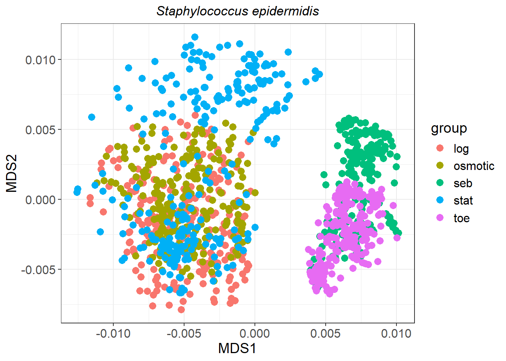
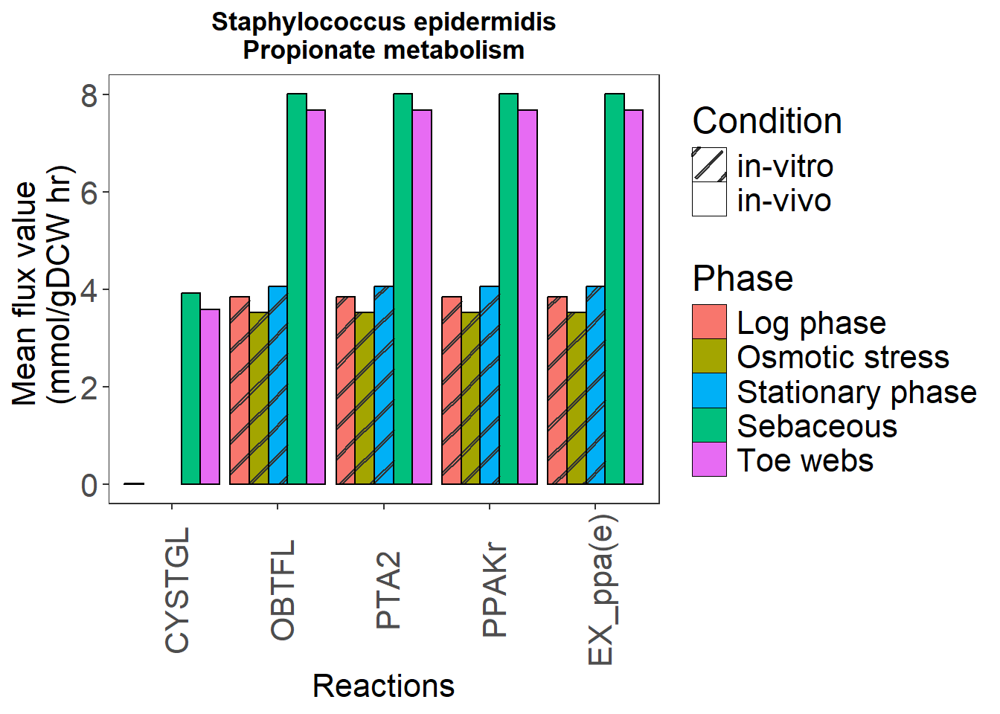
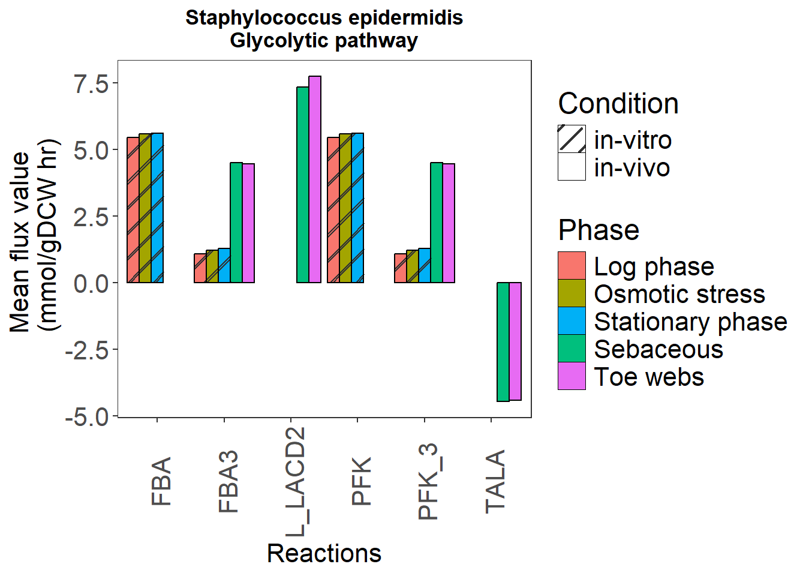
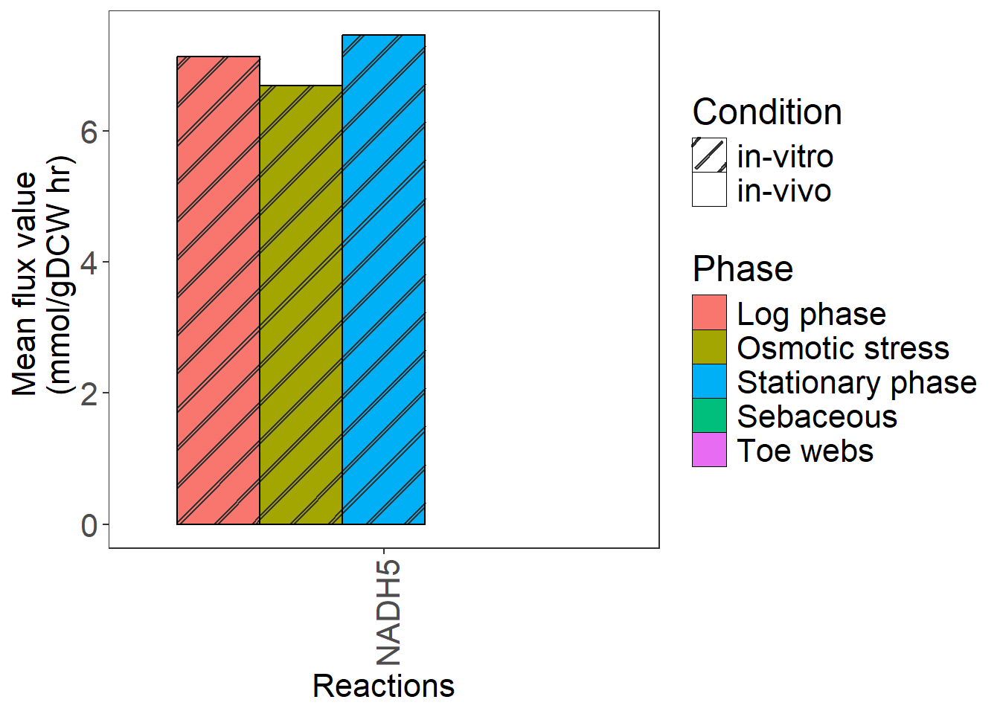
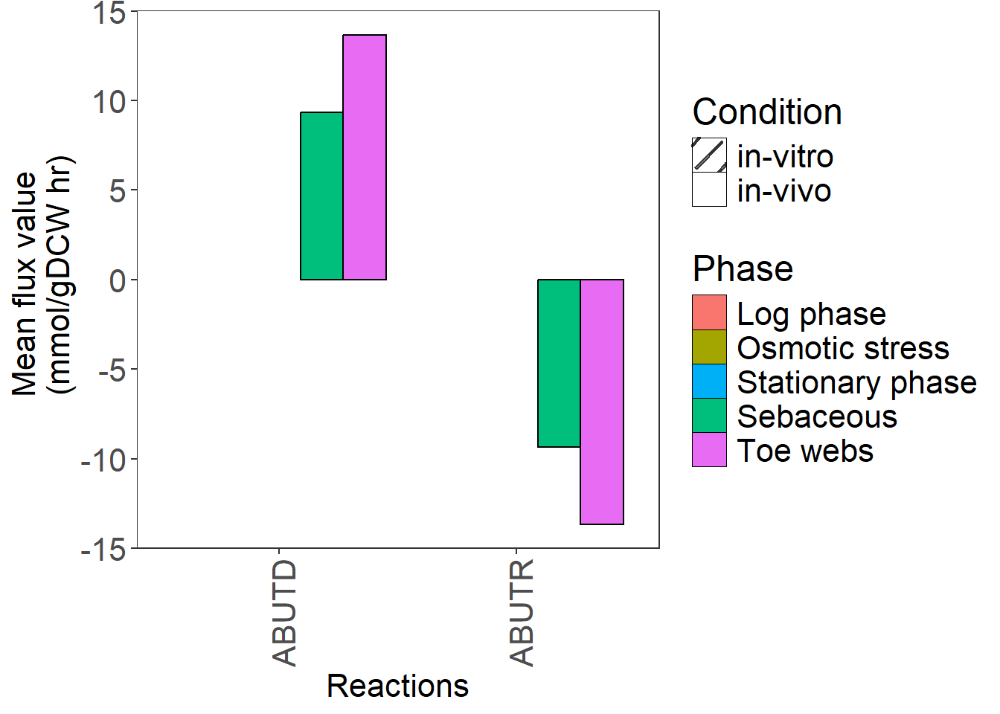
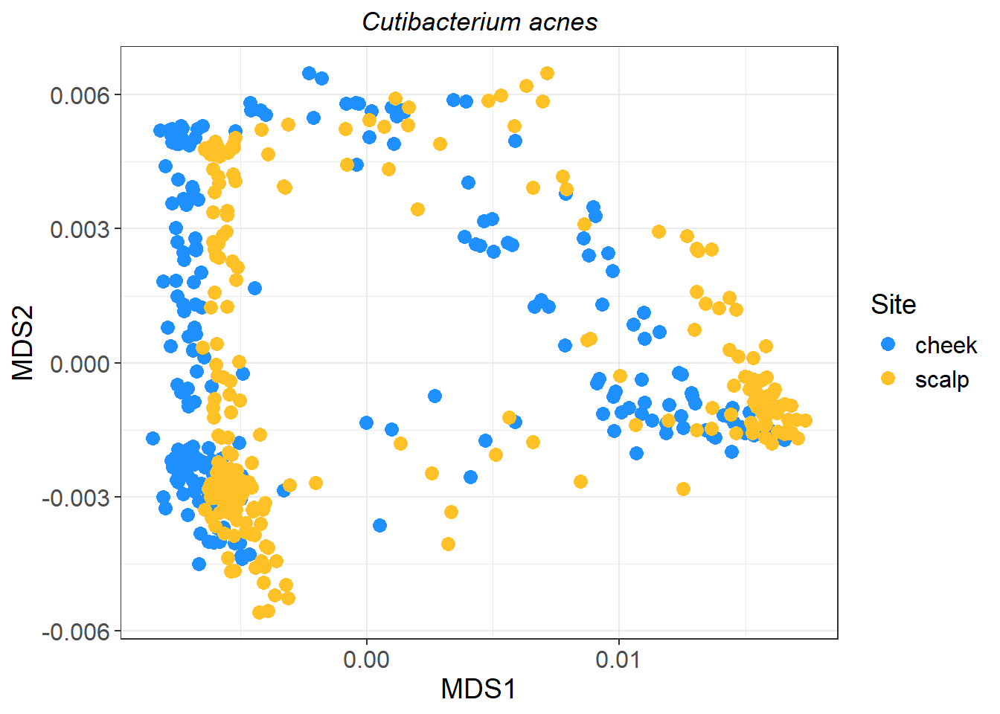
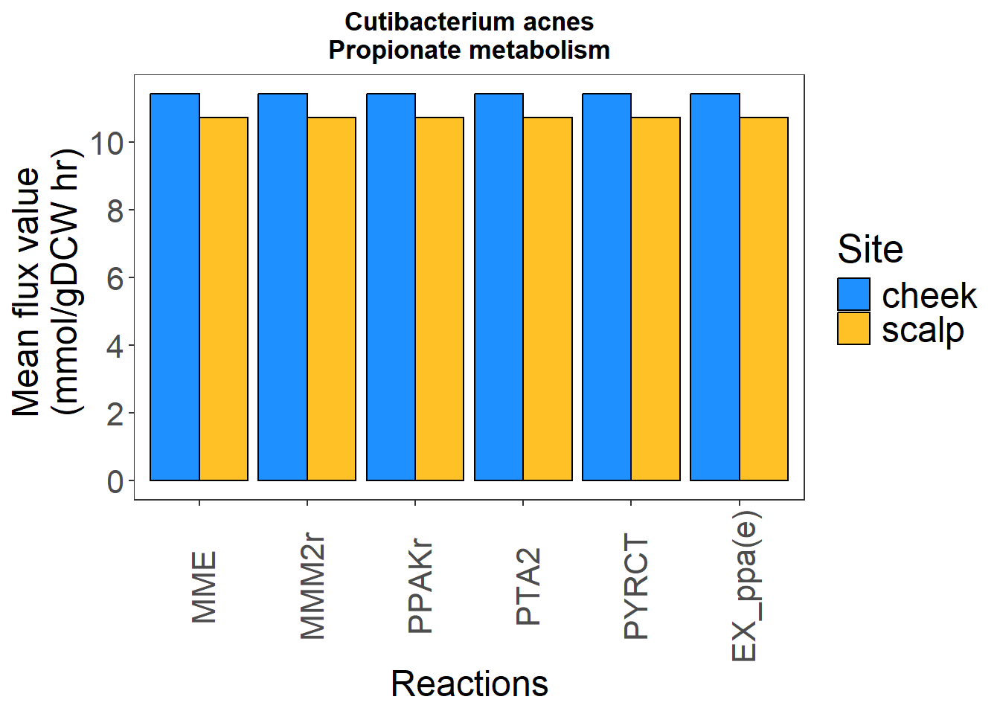
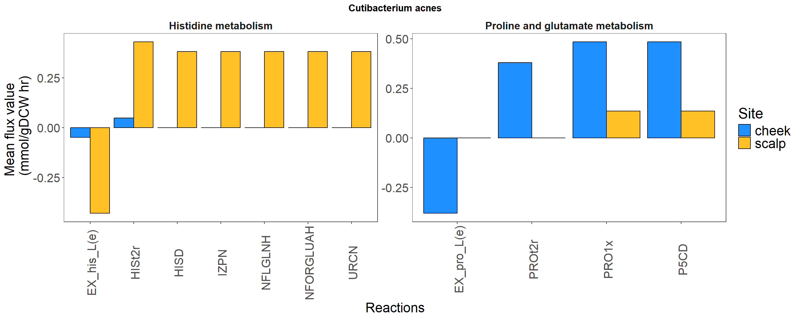

figfolder <- 'plots'
plot_image <- function(needed)
{
col_group <- c(
'Log phase' = '#f8766d',
'Osmotic stress' = '#a3a500',
'Sebaceous' = '#00bf7d',
'Stationary phase' = '#00b0f6',
'Toe webs' = '#e76bf3'
)
bar_plot_da <-
ggplot(data = needed,
aes(
x = variable,
y = val,
fill = group,
pattern = conditions
)) +
geom_bar_pattern(
stat = "identity",
position = position_dodge(preserve = "single"),
color = "black",
pattern_fill = ifelse(
needed$group == "Log phase",
"#f8766d",
ifelse(
needed$group == "Osmotic stress",
"#a3a500",
ifelse(
needed$group == "Stationary phase",
"#00b0f6",
ifelse(needed$group == "Sebaceous", "#00bf7d", "#e76bf3")
)
)
),
pattern_angle = 45,
pattern_density = 0.1,
pattern_spacing = 0.05,
pattern_key_scale_factor = 0.6
) +
scale_fill_manual(values = col_group) +
scale_pattern_manual(values = c("in-vitro" = "stripe", "in-vivo" = "none")) +
labs(fill = "Phase", pattern = "Condition") +
guides(pattern = guide_legend(override.aes = list(fill = "white")),
fill = guide_legend(override.aes = list(pattern = "none"))) +
theme_bw() +
ylab('Mean flux value \n (mmol/gDCW hr)') +
xlab('Reactions') +
theme(
axis.text = element_text(size = 16),
axis.text.x = element_text(angle = 90, vjust = 0.65),
axis.title = element_text(size = 16),
legend.text = element_text(size = 16),
legend.title = element_text(size = 18),
legend.position = 'right',
panel.grid.major = element_blank(),
panel.grid.minor = element_blank(),
strip.text = element_text(size = 14),
plot.title = element_text(face = 'bold', hjust = 0.5)
)
return(bar_plot_da)
}
my_theme_cacnes <- theme_bw() +
theme(axis.text = element_text(size=16),
axis.text.x = element_text(angle = 90, vjust = 0.65),
axis.title = element_text(size=18),
legend.text = element_text(size=18),
legend.title=element_text(size=20),
legend.position = 'right',
strip.text = element_text(size=14),
strip.background = element_blank(),
panel.grid.major = element_blank(),
panel.grid.minor = element_blank(),
plot.title = element_text(face='bold', hjust=0.5)) Integration of metatranscriptomic data with metabolic models of S. epidermidis and C. acnes
Setup
Helper functions
Reading media
LB Medium conditions obtained from CarveMe
media <- read_tsv(file.path('..', 'data', 'media_db_from_carveme.tsv'))Rows: 188 Columns: 4
── Column specification ────────────────────────────────────────────────────────
Delimiter: "\t"
chr (4): medium, description, compound, name
ℹ Use `spec()` to retrieve the full column specification for this data.
ℹ Specify the column types or set `show_col_types = FALSE` to quiet this message.media_lb <- media %>% filter(medium == 'LB')
media_lb$compound <- str_replace_all(media_lb$compound, '__', '_')
media_lb <- media_lb %>% mutate(rxn = paste0('EX_', compound))
media_lb <- media_lb %>% mutate(rxn = paste0(rxn, '(e)'))Reading model in python
import cobra
import os
import riptide
from copy import deepcopy
import pandas as pd
import session_info
session_info.show()-----
cobra 0.29.0
pandas 2.1.3
riptide NA
session_info 1.0.0
-----
Python 3.12.0 (tags/v3.12.0:0fb18b0, Oct 2 2023, 13:03:39) [MSC v.1935 64 bit (AMD64)]
Windows-10-10.0.19045-SP0
-----
Session information updated at 2024-11-26 14:07model = cobra.io.read_sbml_model(os.path.join('..','data','Metabolic_model', 'Staphylococcus_epidermidis_ATCC_12228.xml'))
# cobra.io.save_json_model(model, "../data/Metabolic_model/Staphylococcus_epidermidis_ATCC_12228.json")
model.optimize()
Optimal solution with objective value 82.627
| fluxes | reduced_costs | |
|---|---|---|
| 12DGR180ti | 0.596932 | 0.000000e+00 |
| 1H2NPTH | 0.000000 | 2.621660e-18 |
| 1P4H2CBXLAH | 0.000000 | -5.056200e-19 |
| 23DHMPO | 0.000000 | -4.176160e-18 |
| 23PDE2 | 0.000000 | 8.673617e-19 |
| ... | ... | ... |
| r2137 | 0.656035 | 0.000000e+00 |
| rtranscription | 82.627154 | 0.000000e+00 |
| sink_PGPm1[c] | -0.000017 | 0.000000e+00 |
| sink_gthrd(c) | -0.656035 | 0.000000e+00 |
| biomass034 | 82.627154 | 8.049117e-16 |
1393 rows × 2 columns
model_original = deepcopy(model)
print(len(model.reactions))1393print(len(model.metabolites))1175print(len(model.genes))849count = 0
ubmedium ={}
# for rxn in model.reactions:
# if 'EX_' in rxn.id:
# print(rxn.id)
for rxn in model.reactions:
check = 0
if 'EX_' in rxn.id:
for cpd in r.media_lb['rxn']:
if cpd in rxn.id:
check+=1
#print(rxn.id, cpd)
count +=1
ubmedium[rxn.id] = 5
if check == 0:
#print(rxn.id)
pass
print(len(set(r.media_lb['rxn']) - set(ubmedium.keys()))) #14 reactions not found14# Set medium
model.medium = ubmedium
# Optimise
sol = model.optimize()
print(model.summary())Objective
=========
1.0 biomass034 = 0.7290920672816689
Uptake
------
Metabolite Reaction Flux C-Number C-Flux
adn[e] EX_adn(e) 5 10 22.03%
ala_L[e] EX_ala_L(e) 5 3 6.61%
asp_L[e] EX_asp_L(e) 5 4 8.81%
ca2[e] EX_ca2(e) 0.005789 0 0.00%
cl[e] EX_cl(e) 0.005789 0 0.00%
cobalt2[e] EX_cobalt2(e) 0.005789 0 0.00%
cu2[e] EX_cu2(e) 0.005789 0 0.00%
cys_L[e] EX_cys_L(e) 5 3 6.61%
fe3[e] EX_fe3(e) 0.01737 0 0.00%
glc_D[e] EX_glc_D(e) 5 6 13.22%
glu_L[e] EX_glu_L(e) 5 5 11.01%
gly[e] EX_gly(e) 5 2 4.41%
h[e] EX_h(e) 5 0 0.00%
h2s[e] EX_h2s(e) 3.72 0 0.00%
his_L[e] EX_his_L(e) 0.05975 6 0.16%
ile_L[e] EX_ile_L(e) 0.2578 6 0.68%
ins[e] EX_ins(e) 0.1682 10 0.74%
k[e] EX_k(e) 0.005789 0 0.00%
leu_L[e] EX_leu_L(e) 0.314 6 0.83%
lys_L[e] EX_lys_L(e) 0.236 6 0.62%
met_L[e] EX_met_L(e) 0.1291 5 0.28%
mg2[e] EX_mg2(e) 0.005789 0 0.00%
mn2[e] EX_mn2(e) 0.005789 0 0.00%
nac[e] EX_nac(e) 0.01158 6 0.03%
o2[e] EX_o2(e) 5 0 0.00%
phe_L[e] EX_phe_L(e) 0.1285 9 0.51%
pheme[e] EX_pheme(e) 0.005789 34 0.09%
pi[e] EX_pi(e) 0.9056 0 0.00%
pro_L[e] EX_pro_L(e) 3.041 5 6.70%
pydx[e] EX_pydx(e) 0.005789 8 0.02%
ribflv[e] EX_ribflv(e) 0.01158 17 0.09%
ser_L[e] EX_ser_L(e) 5 3 6.61%
so4[e] EX_so4(e) 0.005789 0 0.00%
thm[e] EX_thm(e) 0.005789 12 0.03%
thr_L[e] EX_thr_L(e) 5 4 8.81%
tyr_L[e] EX_tyr_L(e) 0.08096 9 0.32%
uri[e] EX_uri(e) 0.05922 9 0.23%
val_L[e] EX_val_L(e) 0.2359 5 0.52%
zn2[e] EX_zn2(e) 0.005789 0 0.00%
dnarep[c] dreplication 0.7291 0 0.00%
proteinsynth[c] pbiosynthesis 0.7291 0 0.00%
rnatrans[c] rtranscription 0.7291 0 0.00%
PGPm1[c] sink_PGPm1[c] 1.458E-07 0 0.00%
gthrd[c] sink_gthrd(c) 0.005789 10 0.03%
Secretion
---------
Metabolite Reaction Flux C-Number C-Flux
5mtr[c] DM_5MTR -0.005789 6 0.02%
dhptd[c] DM_dhptd(c) -0.03473 5 0.09%
ac[e] EX_ac(e) -65.26 2 65.35%
biomass[c] EX_biomass(e) -0.7291 0 0.00%
dad_2[e] EX_dad_2(e) -5.041 10 25.24%
for[e] EX_for(e) -18.46 1 9.24%
gcald[e] EX_gcald(e) -0.01737 2 0.02%
h2o[e] EX_h2o(e) -13.66 0 0.00%
nh4[e] EX_nh4(e) -35.09 0 0.00%
ppa[e] EX_ppa(e) -0.03473 3 0.05%
so3[e] EX_so3(e) -8.701 0 0.00%RIPTIDE with cumulative value
In vitro conditions
logphase = riptide.read_transcription_file(os.path.join('..','data','RNA-Seq_data','staph_counts','invitro_mtx_mm_TPM_logphase_gmean_TPM.tsv'), header=True, sep='\t', norm=False)
riptide_log = riptide.contextualize(model=model, transcriptome=logphase)
Initializing model and integrating transcriptomic data...
Pruning zero flux subnetworks...
Analyzing context-specific flux distributions...
Reactions pruned to 479 from 1393 (65.61% change)
Metabolites pruned to 478 from 1175 (59.32% change)
Flux through the objective DECREASED to ~0.5966 from ~0.7291 (18.17% change)
Context-specific metabolism does not correlate with transcriptome (r=0.05, n.s.)
RIPTiDe completed in 36 secondsosmoticstress = riptide.read_transcription_file(os.path.join('..','data','RNA-Seq_data','staph_counts','invitro_mtx_mm_TPM_OS_gmean_TPM.tsv'), header=True, sep='\t', norm=False)
riptide_osmotic = riptide.contextualize(model=model, transcriptome=osmoticstress)
Initializing model and integrating transcriptomic data...
Pruning zero flux subnetworks...
Analyzing context-specific flux distributions...
Reactions pruned to 498 from 1393 (64.25% change)
Metabolites pruned to 497 from 1175 (57.7% change)
Flux through the objective DECREASED to ~0.5962 from ~0.7291 (18.23% change)
Context-specific metabolism does not correlate with transcriptome (r=0.079, n.s.)
RIPTiDe completed in 36 secondsstationaryphase = riptide.read_transcription_file(os.path.join('..','data','RNA-Seq_data','staph_counts','invitro_mtx_mm_TPM_SP_gmean_TPM.tsv'), header=True, sep='\t', norm='False')
riptide_stat = riptide.contextualize(model=model, transcriptome=stationaryphase)
Initializing model and integrating transcriptomic data...
Pruning zero flux subnetworks...
Analyzing context-specific flux distributions...
Reactions pruned to 504 from 1393 (63.82% change)
Metabolites pruned to 505 from 1175 (57.02% change)
Flux through the objective DECREASED to ~0.6129 from ~0.7291 (15.94% change)
Context-specific metabolism correlates with transcriptome (r=0.122, p=0.006 *)
RIPTiDe completed in 38 secondsos.path.join('..','data','RNA-Seq_data','staph_counts','invitro_mtx_mm_TPM_logphase_gmean_TPM.tsv')'..\\data\\RNA-Seq_data\\staph_counts\\invitro_mtx_mm_TPM_logphase_gmean_TPM.tsv'In vivo conditions
We use the same constrained model for in vivo since the model was constrained with rich media in any case
seb = riptide.read_transcription_file(os.path.join('..','data','RNA-Seq_data','staph_counts','invivo_mtx_mm_TPM_sebaceous_gmean_TPM.tsv'), header=True, sep='\t', norm='False')
riptide_seb = riptide.contextualize(model=model, transcriptome=seb)
Initializing model and integrating transcriptomic data...
Pruning zero flux subnetworks...
Analyzing context-specific flux distributions...
Reactions pruned to 476 from 1393 (65.83% change)
Metabolites pruned to 476 from 1175 (59.49% change)
Flux through the objective DECREASED to ~0.6032 from ~0.7291 (17.27% change)
Context-specific metabolism correlates with transcriptome (r=0.103, p=0.024 *)
RIPTiDe completed in 34 secondstoe = riptide.read_transcription_file(os.path.join('..','data','RNA-Seq_data','staph_counts','invivo_mtx_mm_TPM_Tw_gmean_TPM.tsv'), header=True, sep='\t', norm='False')
riptide_toe = riptide.contextualize(model=model, transcriptome=toe)
Initializing model and integrating transcriptomic data...
Pruning zero flux subnetworks...
Analyzing context-specific flux distributions...
Reactions pruned to 496 from 1393 (64.39% change)
Metabolites pruned to 496 from 1175 (57.79% change)
Flux through the objective DECREASED to ~0.5948 from ~0.7291 (18.42% change)
Context-specific metabolism correlates with transcriptome (r=0.145, p=0.001 *)
RIPTiDe completed in 33 secondsDifference of metabolism across multiple conditions
Prepare data
set.seed(100)
sub_sample <- sample(1:500, 250, replace = FALSE)
log_flux <- py$riptide_log$flux_samples[sub_sample, ]
osmotic_flux <- py$riptide_osmotic$flux_samples[sub_sample, ]
stat_flux <- py$riptide_stat$flux_samples[sub_sample, ]
seb_flux <- py$riptide_seb$flux_samples[sub_sample, ]
toe_flux <- py$riptide_toe$flux_samples[sub_sample, ]Prepare metadata
log_flux$X <- NULL
log_flux_samples <-
paste('log_flux_', 1:nrow(log_flux), sep = '')
rownames(log_flux) <- log_flux_samples
osmotic_flux$X <- NULL
osmotic_flux_samples <-
paste('osmotic_flux_', 1:nrow(osmotic_flux), sep = '')
rownames(osmotic_flux) <- osmotic_flux_samples
stat_flux$X <- NULL
stat_flux_samples <-
paste('stat_flux_', 1:nrow(stat_flux), sep = '')
rownames(stat_flux) <- stat_flux_samples
seb_flux$X <- NULL
seb_flux_samples <-
paste('seb_flux_', 1:nrow(seb_flux), sep = '')
rownames(seb_flux) <- seb_flux_samples
toe_flux$X <- NULL
toe_flux_samples <-
paste('toe_flux_', 1:nrow(toe_flux), sep = '')
rownames(toe_flux) <- toe_flux_samples
# Create metadata
log_metadata <-
cbind(log_flux_samples, rep('log', length(log_flux_samples)))
osmotic_metadata <-
cbind(osmotic_flux_samples, rep('osmotic', length(osmotic_flux_samples)))
stat_metadata <-
cbind(stat_flux_samples, rep('stat', length(stat_flux_samples)))
seb_metadata <-
cbind(seb_flux_samples, rep('seb', length(seb_flux_samples)))
toe_metadata <-
cbind(toe_flux_samples, rep('toe', length(toe_flux_samples)))
metadata <-
rbind(log_metadata,
osmotic_metadata,
seb_metadata,
stat_metadata,
toe_metadata)
colnames(metadata) <- c('label', 'group')
metadata <- as.data.frame(metadata)
#write.csv(metadata, here('results','metadata.csv'))NMDS of fluxes
flux_samples <-
bind_rows(log_flux, osmotic_flux, stat_flux, seb_flux, toe_flux)
flux_samples[is.na(flux_samples)] <- 0
# Since many reactions are negative, we add min to make it positive for bray curtis analysis
print(abs(min(flux_samples))) #44.22
flux_samples <- flux_samples + abs(min(flux_samples))
flux_bray_dist <- vegdist(flux_samples, method = 'bray') # Bray-Curtis
flux_nmds <-
as.data.frame(metaMDS(flux_bray_dist, k = 2, trymax = 25)$points)
rownames(flux_nmds) <- rownames(flux_samples)
dat_merged_all <- flux_nmds %>% rownames_to_column('label') %>%
left_join(metadata, by = 'label')MDS_plot <-
ggplot(dat_merged_all, aes(x = MDS1, y = MDS2, colour = group)) +
geom_point(size = 3) + theme_bw() +
theme(
legend.text = element_text(size = 12),
legend.title = element_text(size = 14),
axis.title = element_text(size = 14),
plot.title = element_text(face='italic', hjust=0.5),
axis.text = element_text(size = 12)
) +
ggtitle('Staphylococcus epidermidis')
print(MDS_plot)
ggsave(
file.path('..','plots', 'SuppFig14A.svg'),
plot = MDS_plot,
device = "svg",
width = 8,
height = 5
)
ggsave(
file.path('..','plots', 'SuppFig14A.pdf'),
plot = MDS_plot,
device = "pdf",
width = 8,
height = 5
)
md_adonis <- metadata %>% column_to_rownames('label')
md_adonis <-
md_adonis %>% mutate(
conditions = case_when(
group == 'log' ~ 'in-vitro',
group == 'osmotic' ~
'in-vitro',
group == 'stat' ~
'in-vitro',
group == 'seb' ~
'in-vivo',
group == 'toe' ~
'in-vivo'
)
)
set.seed(100)
adonis2(flux_bray_dist ~ md_adonis$group)Permutation test for adonis under reduced model
Terms added sequentially (first to last)
Permutation: free
Number of permutations: 999
adonis2(formula = flux_bray_dist ~ md_adonis$group)
Df SumOfSqs R2 F Pr(>F)
md_adonis$group 4 0.020373 0.53511 358.27 0.001 ***
Residual 1245 0.017699 0.46489
Total 1249 0.038073 1.00000
---
Signif. codes: 0 '***' 0.001 '**' 0.01 '*' 0.05 '.' 0.1 ' ' 1Getting subsystems from model
# Initialize dictionary to store subsystem reaction counts
subsystem_reactions = {}
# Iterate through reactions and count by subsystem
for reaction in model.reactions:
if reaction.subsystem:
if reaction.subsystem in subsystem_reactions:
subsystem_reactions[reaction.subsystem] += 1
else:
subsystem_reactions[reaction.subsystem] = 1
# Convert dictionary to dataframe
df_python = pd.DataFrame(list(subsystem_reactions.items()), columns=['Subsystem', 'Reaction_Count'])
subsystem_reactions.items<built-in method items of dict object at 0x0000021797968B40>
# reaction subsystem info
rxn_subsytem = {}
# Iterate through reactions and count by subsystem
for reaction in model.reactions:
if reaction.subsystem:
if reaction.id not in rxn_subsytem:
rxn_subsytem[reaction.id] = reaction.subsystem
# Convert dictionary to dataframe
df_rxn_subsytem = pd.DataFrame(list(rxn_subsytem.items()), columns=['reaction', 'Subsytems'])
# reaction info
rxn_info = {}
# Iterate through reactions and count by subsystem
for reaction in model.reactions:
if reaction.subsystem:
if reaction.id not in rxn_info:
rxn_info[reaction.id] = reaction.reaction
# Convert dictionary to dataframe
df_rxn_info_withrxns = pd.DataFrame(list(rxn_info.items()), columns=['reaction', 'rxnformula'])
Within the metabolism, which reactions are different between conditions?
GLM
flux_samples <- bind_rows(log_flux, osmotic_flux, stat_flux, seb_flux,toe_flux)
flux_samples[is.na(flux_samples)] <- 0
rxns_to_test <- flux_samples %>% colnames()
data_for_da <- flux_samples %>% rownames_to_column('label') %>% left_join(metadata, by='label')
data_for_da <- data_for_da %>%
mutate(group_oh = case_when(group =='log' ~ 1,
group == 'seb' ~ 2,
group== 'osmotic' ~ 3,
group == 'toe'~4,
group == 'stat'~5))
data_for_da[is.na(data_for_da)] <- 0
flux_samples[is.na(flux_samples)] <- 0
rxns_da <-
lapply(data_for_da[, rxns_to_test],
function(x)
coefficients(summary(
glm(x~group , data = data_for_da))))
df_res <- data.frame()
for (rxns in rxns_to_test){
tmp <- data.frame(rxns_da[[rxns]])
tmp$Reactions <- rxns
df_res <- bind_rows(df_res,tmp)}
df_res %<>% rownames_to_column('coeff')
df_res <- df_res %>% filter(!grepl('(Intercept)', coeff))
df_res %<>% dplyr::rename( 'p-val'="Pr...t..")
df_res %<>% clean_names()
df_res$p_adj <- p.adjust(df_res$p_val, method = 'fdr')
df_res <- df_res %>% dplyr::rename(reaction=reactions) %>%
left_join(py$df_rxn_subsytem)
df_res_fil <- df_res %>% dplyr::filter(p_adj<0.001, abs(estimate)>2)
df_res_fil <- df_res_fil %>% left_join(py$df_rxn_subsytem)
#write.csv(df_res_fil, file=file.path('..','results', 'differentially_abundant_reactions_GLM_staphepi.csv'))Prepare data to plot
flux_samples_to_plot <-
bind_rows(log_flux, osmotic_flux, stat_flux, seb_flux, toe_flux)
annot_column <-
data.frame(
test = c('log', 'osmotic', 'stat', 'seb', 'toe'),
conditions = c('in-vitro', 'in-vitro', 'in-vitro', 'in-vivo', 'in-vivo')
) %>%
column_to_rownames('test')
bar_plot_data <- flux_samples_to_plot %>%
dplyr::select(unique(df_res_fil$reaction)) %>%
rownames_to_column('label') %>%
left_join(metadata, by = 'label') %>%
reshape2::melt() %>%
group_by(group, variable) %>%
summarise(val = mean(value), stddev = sd(value)) %>%
left_join(annot_column %>% rownames_to_column('group'), by = 'group')
bar_plot_data$group <- factor(bar_plot_data$group,
levels = c("log", "stat", "osmotic", "seb", "toe"))
rxn_subsytem <-
py$df_rxn_subsytem %>% dplyr::rename(variable = reaction)
bar_plot_data %<>% left_join(rxn_subsytem, by = 'variable')Plot bar plots of reactions with different fluxes
Propionate metabolism
needed_rxns <- c('CYSTGL', 'OBTFL', 'PTA2', 'PPAKr', 'EX_ppa(e)')
needed <- bar_plot_data %>%
filter(variable %in% needed_rxns)
needed$variable <- factor(needed$variable, levels = needed_rxns)
needed$group <- factor(
needed$group,
levels = c("log", "osmotic", "stat", "seb", "toe"),
labels = c(
"Log phase",
"Osmotic stress",
"Stationary phase",
"Sebaceous",
"Toe webs"
)
)
needed$pattern_condition <-
ifelse(needed$conditions == "in-vitro", "Striped", "Solid")
cys_prop <- plot_image(needed) +
ggtitle('Staphylococcus epidermidis\nPropionate metabolism')
ggsave(
file.path('..','plots', 'Figure4A.svg'),
plot = cys_prop,
device = "svg",
width = 8,
height = 5
)
ggsave(
file.path('..','plots', 'Figure4A.pdf'),
plot = cys_prop,
device = "pdf",
width = 8,
height = 5
)
print(cys_prop)
PPP and Glycolysis
glyco <- c('FBA3', 'PFK_3', 'TALA', 'FBA', 'PFK', 'L_LACD2', 'PPCKr')
needed_glyco <- bar_plot_data %>%
filter(variable %in% glyco)
needed_glyco$group <- factor(
needed_glyco$group,
levels = c("log", "osmotic", "stat", "seb", "toe"),
labels = c(
"Log phase",
"Osmotic stress",
"Stationary phase",
"Sebaceous",
"Toe webs"
)
)
needed_glyco$pattern_condition <-
ifelse(needed_glyco$conditions == "in-vitro", "Striped", "Solid")
glyco <- plot_image(needed_glyco) +
ggtitle('Staphylococcus epidermidis\nGlycolytic pathway')
ggsave(
file.path('..','plots', 'Figure4B.svg'),
plot = glyco,
device = "svg",
width = 8,
height = 5
)
ggsave(
file.path('..','plots', 'Figure4B.pdf'),
plot = glyco,
device = "pdf",
width = 8,
height = 5
)
print(glyco)
Respiration
resp <- c('NADH5')
needed_resp <- bar_plot_data %>%
filter(variable %in% resp)
needed_resp$group <- factor(
needed_resp$group,
levels = c("log", "osmotic", "stat", "seb", "toe"),
labels = c(
"Log phase",
"Osmotic stress",
"Stationary phase",
"Sebaceous",
"Toe webs"
)
)
needed_resp$pattern_condition <-
ifelse(needed_resp$conditions == "in-vitro", "Striped", "Solid")
resp <- plot_image(needed_resp)
ggsave(
file.path('..','plots', 'SuppFig14B.svg'),
plot = resp,
device = "svg",
width = 8,
height = 5
)
ggsave(
file.path('..','plots', 'SuppFig14B.pdf'),
plot = resp,
device = "pdf",
width = 8,
height = 5
)
print(resp)
Aminobutanol metabolism
aminobut <- c('ABUTD', 'ABUTR')
needed_aminobut <- bar_plot_data %>%
filter(variable %in% aminobut)
needed_aminobut$group <- factor(
needed_aminobut$group,
levels = c("log", "osmotic", "stat", "seb", "toe"),
labels = c(
"Log phase",
"Osmotic stress",
"Stationary phase",
"Sebaceous",
"Toe webs"
)
)
needed_aminobut$pattern_condition <-
ifelse(needed_aminobut$conditions == "in-vitro", "Striped", "Solid")
abut <- plot_image(needed_aminobut)
ggsave(
file.path('..','plots', 'SuppFig14C.svg'),
plot = abut,
device = "svg",
width = 8,
height = 5
)
ggsave(
file.path('..','plots', 'SuppFig14C.pdf'),
plot = abut,
device = "pdf",
width = 8,
height = 5
)
print(abut)
Cutibacterium acnes
Reading model in python
model_cacnes = cobra.io.read_sbml_model(os.path.join('..','data','Metabolic_model','Propionibacterium_acnes_KPA171202.xml'))
#cobra.io.save_json_model(model, "../data/Metabolic_model/Propionibacterium_acnes_KPA171202.json")
# Just the original model solution was 129.269
model_cacnes.optimize() # Solution 129.269
Optimal solution with objective value 129.269
| fluxes | reduced_costs | |
|---|---|---|
| 1P4H2CBXLAH | 0.000000 | 6.266542e-32 |
| 23DHMPO | 0.000000 | -1.084058e-17 |
| 23PDE2 | 0.000000 | 5.585197e-33 |
| 23PDE4 | 0.000000 | 5.585197e-33 |
| 23PDE7 | 0.000000 | 5.585197e-33 |
| ... | ... | ... |
| r1667 | 967.308806 | -2.822349e-18 |
| r2137 | 0.400281 | 0.000000e+00 |
| rtranscription | 129.268878 | 0.000000e+00 |
| sink_gthrd(c) | -0.400281 | 0.000000e+00 |
| biomass432 | 129.268878 | 2.168365e-16 |
1323 rows × 2 columns
model_cacnes_original = deepcopy(model_cacnes)
print(len(model_cacnes.reactions)) #13231323print(len(model_cacnes.metabolites)) #11341134print(len(model_cacnes.genes)) #791791Getting subsystems from model
# Initialize dictionary to store subsystem reaction counts
subsystem_reactions_cacnes = {}
# Iterate through reactions and count by subsystem
for reaction in model_cacnes.reactions:
if reaction.subsystem:
if reaction.subsystem in subsystem_reactions_cacnes:
subsystem_reactions_cacnes[reaction.subsystem] += 1
else:
subsystem_reactions_cacnes[reaction.subsystem] = 1
# Convert dictionary to dataframe
df_python = pd.DataFrame(list(subsystem_reactions_cacnes.items()), columns=['Subsystem', 'Reaction_Count'])
subsystem_reactions_cacnes.items<built-in method items of dict object at 0x000002179CD1CC80>
# reaction subsystem info
rxn_subsytem_cacnes = {}
# Iterate through reactions and count by subsystem
for reaction in model_cacnes.reactions:
if reaction.subsystem:
if reaction.id not in rxn_subsytem_cacnes:
rxn_subsytem_cacnes[reaction.id] = reaction.subsystem
# Convert dictionary to dataframe
df_rxn_subsytem_cacnes = pd.DataFrame(list(rxn_subsytem_cacnes.items()), columns=['reaction', 'Subsytems'])
# reaction info
rxn_info_cacnes = {}
# Iterate through reactions and count by subsystem
for reaction in model_cacnes.reactions:
if reaction.subsystem:
if reaction.id not in rxn_info_cacnes:
rxn_info_cacnes[reaction.id] = reaction.reaction
# Convert dictionary to dataframe
df_rxn_info_cacnes_withrxns = pd.DataFrame(list(rxn_info_cacnes.items()), columns=['reaction', 'rxnformula'])
Reading media
data_aftermed_cacnes = []
for rxn in model_cacnes.reactions:
check = 0
if 'EX_' in rxn.id:
#print(rxn.id, rxn.lower_bound, rxn.upper_bound)
data_aftermed_cacnes.append({
'rxn_id': rxn.id,
'lower_bound': rxn.lower_bound,
'upper_bound': rxn.upper_bound
})
df_aftermed_cacnes = pd.DataFrame(data_aftermed_cacnes)
cocktail = {'EX_adn(e)': 1, 'EX_amp(e)': 1, 'EX_aso3(e)': 1, 'EX_cd2(e)': 1, 'EX_cmp(e)': 1, 'EX_cro4(e)': 1, 'EX_dad_2(e)': 1, 'EX_dcyt(e)': 1, 'EX_gmp(e)': 1, 'EX_gsn(e)': 1, 'EX_h2s(e)': 1, 'EX_hg2(e)': 1, 'EX_hxan(e)': 1, 'EX_ins(e)': 1, 'EX_lipoate(e)': 1, 'EX_mobd(e)': 1, 'EX_ni2(e)': 1, 'EX_o2(e)': 0, 'EX_pheme(e)': 1, 'EX_pydx(e)': 1, 'EX_thymd(e)': 1, 'EX_ump(e)': 1, 'EX_uri(e)': 1, 'EX_2fe2s(e)': 1, 'EX_4fe4s(e)': 1, 'EX_aacp(e)': 1, 'EX_ala_L(e)': 0.5, 'EX_arg_L(e)': 0.5, 'EX_asn_L(e)': 0.5, 'EX_asp_L(e)': 0.5, 'EX_btn(e)': 1, 'EX_ca2(e)': 1, 'EX_cbl1(e)': 1, 'EX_chol(e)': 1, 'EX_cl(e)': 1, 'EX_cobalt2(e)': 1, 'EX_csn(e)': 1, 'EX_cu2(e)': 1, 'EX_cys_L(e)': 0.5, 'EX_fe2(e)': 1, 'EX_fe3(e)': 1, 'EX_fol(e)': 1, 'EX_glc_D(e)': 5, 'EX_gln_L(e)': 0.5, 'EX_glu_L(e)': 0.5, 'EX_gly(e)': 0, 'EX_glyc(e)': 10, 'EX_h(e)': 1, 'EX_h2o(e)': 1, 'EX_his_L(e)': 0.5, 'EX_ile_L(e)': 0.5, 'EX_k(e)': 1, 'EX_leu_L(e)': 0.5, 'EX_LPG2_Cat': 1, 'EX_lys_L(e)': 0.5, 'EX_met_L(e)': 0.5, 'EX_mg2(e)': 1, 'EX_mn2(e)': 1, 'EX_na1(e)': 1, 'EX_nac(e)': 1, 'EX_nh4(e)': 1, 'EX_phe_L(e)': 0.5, 'EX_pi(e)': 1, 'EX_pnto_R(e)': 1, 'EX_pro_L(e)': 0.5, 'EX_ribflv(e)': 1, 'EX_ser_L(e)': 0.5, 'EX_so3(e)': 1, 'EX_so4(e)': 1, 'EX_thm(e)': 1, 'EX_thr_L(e)': 0.5, 'EX_trp_L(e)': 0.5, 'EX_tyr_L(e)': 0.5, 'EX_ura(e)': 1, 'EX_val_L(e)': 0.5, 'EX_zn2(e)': 1 }
for rxns in model_cacnes.reactions:
if 'EX_' in rxns.id:
model_cacnes.reactions.get_by_id(rxns.id).lower_bound = 0
for rxn_id, lower_bound in cocktail.items():
if rxn_id in model_cacnes.reactions:
model_cacnes.reactions.get_by_id(rxn_id).lower_bound = -lower_bound
#print(f'done {rxn_id}')
#else:
#print(f"Reaction {rxn_id} not found in the model.")
print(model_cacnes.summary())Objective
=========
1.0 biomass432 = 0.886850644175935
Uptake
------
Metabolite Reaction Flux C-Number C-Flux
ala_L[e] EX_ala_L(e) 0.5 3 1.30%
amp[e] EX_amp(e) 1 10 8.66%
arg_L[e] EX_arg_L(e) 0.5 6 2.60%
asn_L[e] EX_asn_L(e) 0.5 4 1.73%
asp_L[e] EX_asp_L(e) 0.5 4 1.73%
ca2[e] EX_ca2(e) 0.002746 0 0.00%
cl[e] EX_cl(e) 0.002746 0 0.00%
cobalt2[e] EX_cobalt2(e) 0.002746 0 0.00%
csn[e] EX_csn(e) 1 4 3.46%
cu2[e] EX_cu2(e) 0.002746 0 0.00%
cys_L[e] EX_cys_L(e) 0.07302 3 0.19%
dcyt[e] EX_dcyt(e) 0.04546 9 0.35%
fe2[e] EX_fe2(e) 0.008238 0 0.00%
fol[e] EX_fol(e) 0.008238 19 0.14%
glc_D[e] EX_glc_D(e) 5 6 25.98%
gln_L[e] EX_gln_L(e) 0.5 5 2.16%
glu_L[e] EX_glu_L(e) 0.5 5 2.16%
glyc[e] EX_glyc(e) 10 3 25.98%
his_L[e] EX_his_L(e) 0.5 6 2.60%
ile_L[e] EX_ile_L(e) 0.3655 6 1.90%
k[e] EX_k(e) 0.002746 0 0.00%
leu_L[e] EX_leu_L(e) 0.3329 6 1.73%
lys_L[e] EX_lys_L(e) 0.2531 6 1.32%
met_L[e] EX_met_L(e) 0.1353 5 0.59%
mg2[e] EX_mg2(e) 0.002746 0 0.00%
mn2[e] EX_mn2(e) 0.002746 0 0.00%
nac[e] EX_nac(e) 0.005492 6 0.03%
pheme[e] EX_pheme(e) 0.002746 34 0.08%
pnto_R[e] EX_pnto_R(e) 0.005492 9 0.04%
pro_L[e] EX_pro_L(e) 0.5 5 2.16%
pydx[e] EX_pydx(e) 0.002746 8 0.02%
ser_L[e] EX_ser_L(e) 0.5 3 1.30%
so4[e] EX_so4(e) 0.002746 0 0.00%
thm[e] EX_thm(e) 0.002746 12 0.03%
thr_L[e] EX_thr_L(e) 0.5 4 1.73%
trp_L[e] EX_trp_L(e) 0.5 11 4.76%
tyr_L[e] EX_tyr_L(e) 0.5 9 3.90%
val_L[e] EX_val_L(e) 0.3124 5 1.35%
zn2[e] EX_zn2(e) 0.002746 0 0.00%
dnarep[c] dreplication 0.8869 0 0.00%
proteinsynth[c] pbiosynthesis 0.8869 0 0.00%
rnatrans[c] rtranscription 0.8869 0 0.00%
gthrd[c] sink_gthrd(c) 0.002746 10 0.02%
Secretion
---------
Metabolite Reaction Flux C-Number C-Flux
5mtr[c] DM_5MTR -0.002746 6 0.02%
dhptd[c] DM_dhptd(c) -0.01648 5 0.10%
2obut[e] EX_2obut(e) -0.01648 4 0.08%
ac[e] EX_ac(e) -5.829 2 14.46%
biomass[c] EX_biomass(e) -0.8869 0 0.00%
for[e] EX_for(e) -13.4 1 16.62%
h[e] EX_h(e) -25.45 0 0.00%
h2o[e] EX_h2o(e) -4.202 0 0.00%
h2s[e] EX_h2s(e) -0.01648 0 0.00%
hxan[e] EX_hxan(e) -0.7318 5 4.54%
indole[e] EX_indole(e) -0.4581 8 4.55%
nh4[e] EX_nh4(e) -6.994 0 0.00%
phe_L[e] EX_phe_L(e) -0.2559 9 2.86%
pi[e] EX_pi(e) -0.2798 0 0.00%
ppa[e] EX_ppa(e) -14.1 3 52.49%
ura[e] EX_ura(e) -0.8619 4 4.28%RIPTIDE with cumulative value
Cheek
cheek = riptide.read_transcription_file(os.path.join('..','data','RNA-Seq_data','pacnes_counts','C_acnes_invivo_mtx_mm_TPM_Ch_gmean_TPM.tsv'), header=True, sep='\t', norm=False)
riptide_cheek = riptide.contextualize(model=model_cacnes, transcriptome=cheek)
Initializing model and integrating transcriptomic data...
Pruning zero flux subnetworks...
Analyzing context-specific flux distributions...
Reactions pruned to 499 from 1323 (62.28% change)
Metabolites pruned to 500 from 1134 (55.91% change)
Flux through the objective DECREASED to ~0.7123 from ~0.8869 (19.69% change)
Context-specific metabolism does not correlate with transcriptome (r=0.086, n.s.)
RIPTiDe completed in 38 secondsScalp
scalp = riptide.read_transcription_file(os.path.join('..','data','RNA-Seq_data','pacnes_counts','C_acnes_invivo_mtx_mm_TPM_Sc_gmean_TPM.tsv'), header=True, sep='\t', norm=False)
riptide_scalp = riptide.contextualize(model=model_cacnes, transcriptome=scalp)
Initializing model and integrating transcriptomic data...
Pruning zero flux subnetworks...
Analyzing context-specific flux distributions...
Reactions pruned to 500 from 1323 (62.21% change)
Metabolites pruned to 499 from 1134 (56.0% change)
Flux through the objective DECREASED to ~0.7123 from ~0.8869 (19.69% change)
Context-specific metabolism correlates with transcriptome (r=0.107, p=0.016 *)
RIPTiDe completed in 35 secondsDifference of metabolism across multiple conditions
Prepare data
set.seed(100)
sub_sample <- sample(1:500, 250, replace = FALSE)
cheek_flux <- py$riptide_cheek$flux_samples[sub_sample, ]
scalp_flux <- py$riptide_scalp$flux_samples[sub_sample, ]Prepare metadata
cheek_flux$X <- NULL
cheek_flux_samples <-
paste('cheek_flux_', 1:nrow(cheek_flux), sep = '')
rownames(cheek_flux) <- cheek_flux_samples
scalp_flux$X <- NULL
scalp_flux_samples <-
paste('scalp_flux_', 1:nrow(scalp_flux), sep = '')
rownames(scalp_flux) <- scalp_flux_samples
cheek_metadata <-
cbind(cheek_flux_samples, rep('cheek', length(cheek_flux_samples)))
scalp_metadata <-
cbind(scalp_flux_samples, rep('scalp', length(scalp_flux_samples)))
metadata_cacnes <- rbind(cheek_metadata, scalp_metadata)
colnames(metadata_cacnes) <- c('label', 'group')
metadata_cacnes <- as.data.frame(metadata_cacnes)NMDS of fluxes
flux_samples_cacnes <- bind_rows(cheek_flux, scalp_flux)
flux_samples_cacnes[is.na(flux_samples_cacnes)] <- 0
print(abs(min(flux_samples_cacnes)))[1] 16.69153flux_samples_cacnes <-
flux_samples_cacnes + abs(min(flux_samples_cacnes))
flux_bray_dist_cacnes <-
vegdist(flux_samples_cacnes, method = 'bray')
flux_nmds_cacnes <-
as.data.frame(metaMDS(flux_bray_dist_cacnes, k = 2, trymax = 25)$points)Run 0 stress 0.04561616
Run 1 stress 0.04561737
... Procrustes: rmse 0.0002504336 max resid 0.005093565
... Similar to previous best
Run 2 stress 0.04562159
... Procrustes: rmse 0.000584334 max resid 0.006859576
... Similar to previous best
Run 3 stress 0.04561818
... Procrustes: rmse 0.0002758768 max resid 0.005490123
... Similar to previous best
Run 4 stress 0.04562016
... Procrustes: rmse 0.0005131633 max resid 0.007357104
... Similar to previous best
Run 5 stress 0.04562306
... Procrustes: rmse 0.0005152283 max resid 0.006809761
... Similar to previous best
Run 6 stress 0.04562786
... Procrustes: rmse 0.0003134671 max resid 0.00550549
... Similar to previous best
Run 7 stress 0.04562276
... Procrustes: rmse 0.0004649354 max resid 0.006278243
... Similar to previous best
Run 8 stress 0.04561796
... Procrustes: rmse 0.0002819397 max resid 0.005356642
... Similar to previous best
Run 9 stress 0.04561731
... Procrustes: rmse 0.0004080508 max resid 0.006576745
... Similar to previous best
Run 10 stress 0.04562452
... Procrustes: rmse 0.0006774451 max resid 0.007585504
... Similar to previous best
Run 11 stress 0.04561868
... Procrustes: rmse 0.0002475727 max resid 0.005211598
... Similar to previous best
Run 12 stress 0.04561303
... New best solution
... Procrustes: rmse 0.0005074447 max resid 0.007304459
... Similar to previous best
Run 13 stress 0.04562655
... Procrustes: rmse 0.0005583684 max resid 0.007360201
... Similar to previous best
Run 14 stress 0.045634
... Procrustes: rmse 0.0008433596 max resid 0.007598371
... Similar to previous best
Run 15 stress 0.04561885
... Procrustes: rmse 0.0004048176 max resid 0.007132277
... Similar to previous best
Run 16 stress 0.04562168
... Procrustes: rmse 0.000515506 max resid 0.007279697
... Similar to previous best
Run 17 stress 0.04562292
... Procrustes: rmse 0.0005329251 max resid 0.007326458
... Similar to previous best
Run 18 stress 0.04562072
... Procrustes: rmse 0.0004669033 max resid 0.007194316
... Similar to previous best
Run 19 stress 0.04561939
... Procrustes: rmse 0.0004139409 max resid 0.005551815
... Similar to previous best
Run 20 stress 0.04562021
... Procrustes: rmse 0.0006674179 max resid 0.007487975
... Similar to previous best
*** Best solution repeated 9 timesrownames(flux_nmds_cacnes) <- rownames(flux_samples_cacnes)
dat_merged_all_cacnes <-
flux_nmds_cacnes %>% rownames_to_column('label') %>%
left_join(metadata_cacnes, by = 'label') %>% filter(group != 'staphcomp')
MDS_plot_cacnes <-
ggplot(dat_merged_all_cacnes, aes(x = MDS1, y = MDS2, colour = group)) +
geom_point(size = 3) + theme_bw() +
labs(colour = 'Site') +
theme(
legend.text = element_text(size = 12),
legend.title = element_text(size = 14),
axis.title = element_text(size = 14),
axis.text = element_text(size = 12),
plot.title = element_text(face='italic', hjust=0.5)
) +
scale_color_manual(values = c(
'cheek' = 'dodgerblue',
'scalp' = 'goldenrod1'
)) + ggtitle('Cutibacterium acnes')
print(MDS_plot_cacnes)
md_adonis_cacnes <- metadata_cacnes %>% column_to_rownames('label')
set.seed(100)
adonis2(flux_bray_dist_cacnes ~ md_adonis_cacnes$group)Permutation test for adonis under reduced model
Terms added sequentially (first to last)
Permutation: free
Number of permutations: 999
adonis2(formula = flux_bray_dist_cacnes ~ md_adonis_cacnes$group)
Df SumOfSqs R2 F Pr(>F)
md_adonis_cacnes$group 1 0.0006709 0.05272 27.717 0.001 ***
Residual 498 0.0120543 0.94728
Total 499 0.0127252 1.00000
---
Signif. codes: 0 '***' 0.001 '**' 0.01 '*' 0.05 '.' 0.1 ' ' 1ggsave(
file.path('..','plots', 'SuppFig15.svg'),
plot = MDS_plot_cacnes,
device = "svg",
width = 8,
height = 5
)
ggsave(
file.path('..','plots', 'SuppFig15.pdf'),
plot = MDS_plot_cacnes,
device = "pdf",
width = 8,
height = 5
)With in the metabolism, which reactions are DA between conditions
GLM
rxns_to_test_cacnes <- flux_samples_cacnes %>% colnames()
data_for_da_cacnes <-
flux_samples_cacnes %>%
rownames_to_column('label') %>%
left_join(metadata_cacnes, by = 'label')
data_for_da_cacnes <- data_for_da_cacnes %>%
mutate(
group_oh = case_when(
group == 'cheek' ~ 1,
group == 'scalp' ~ 2))
data_for_da_cacnes[is.na(data_for_da_cacnes)] <- 0
flux_samples_cacnes[is.na(flux_samples_cacnes)] <- 0
rxns_da_cacnes <-
lapply(data_for_da_cacnes[, rxns_to_test_cacnes],
function(x)
coefficients(summary(
glm(x ~ group , data = data_for_da_cacnes)
)))
df_res_cacnes <- data.frame()
for (rxns in rxns_to_test_cacnes) {
tmp <- data.frame(rxns_da_cacnes[[rxns]])
tmp$Reactions <- rxns
df_res_cacnes <- bind_rows(df_res_cacnes, tmp)
}
df_res_cacnes %<>% rownames_to_column('coeff')
df_res_cacnes <-
df_res_cacnes %>% filter(!grepl('(Intercept)', coeff))
df_res_cacnes %<>% dplyr::rename('p-val' = "Pr...t..")
df_res_cacnes %<>% clean_names()
df_res_cacnes$p_adj <-
p.adjust(df_res_cacnes$p_val, method = 'fdr')
df_res_cacnes <-
df_res_cacnes %>% dplyr::rename(reaction = reactions) %>%
left_join(py$df_rxn_subsytem)
df_res_cacnes_fil <-
df_res_cacnes %>% dplyr::filter(p_adj < 0.001)
df_res_cacnes_fil <-
df_res_cacnes_fil %>% left_join(py$df_rxn_subsytem
)Prepare samples to plot
flux_samples_cacnes_to_plot <- bind_rows(cheek_flux, scalp_flux)Bar plots propionate
ppa_bar_plot_data <- flux_samples_cacnes_to_plot %>%
dplyr::select('MME', 'MMM2r', 'PPAKr', 'PTA2', 'PYRCT',
'EX_ppa(e)') %>%
rownames_to_column('label') %>%
left_join(metadata_cacnes, by = 'label') %>%
melt() %>%
group_by(group, variable) %>%
summarise(val = mean(value), stddev = sd(value)) %>%
dplyr::rename('reaction' = 'variable') %>%
left_join(df_res_fil %>%
dplyr::select(reaction, Subsytems),
by = 'reaction')
ppa_bar_plot_data$val[is.na(ppa_bar_plot_data$val)] <- 0
ppa_bar_plot_data$reaction <-
factor(
ppa_bar_plot_data$reaction,
levels = c('MME', 'MMM2r', 'PPAKr', 'PTA2', 'PYRCT', 'EX_ppa(e)'))
flux_diff_ppa <-
ggplot(ppa_bar_plot_data, aes(x = reaction, y = val, fill = group)) +
geom_bar(stat = "identity",
color = "black",
position = position_dodge()) +
ylab('Mean flux value \n (mmol/gDCW hr)') +
xlab('Reactions') +
scale_fill_manual(values = c(
'cheek' = 'dodgerblue',
'scalp' = 'goldenrod1'
)) + labs(fill = 'Site') +
scale_y_continuous(breaks = scales::pretty_breaks(n = 5)) +
ggtitle('Cutibacterium acnes\nPropionate metabolism') +
my_theme_cacnes
print(flux_diff_ppa)
ggsave(
file.path('..','plots', 'Figure4C.svg'),
plot = flux_diff_ppa,
device = "svg",
width = 6,
height = 5
)
ggsave(
file.path('..','plots', 'Figure4C.pdf'),
plot = flux_diff_ppa,
device = "pdf",
width = 8,
height = 6
)Bar plots Amino acids
bar_plot_data_aa_pr <- flux_samples_cacnes_to_plot %>%
dplyr::select(
'HISD',
'IZPN',
'NFLGLNH',
'NFORGLUAH',
'URCN',
'EX_his_L(e)',
'HISt2r',
'PRO1x',
'PROt2r',
'P5CD',
'EX_pro_L(e)'
) %>%
rownames_to_column('label') %>%
left_join(metadata_cacnes, by = 'label') %>%
reshape2::melt() %>%
group_by(group, variable) %>%
summarise(val = mean(value), stddev = sd(value)) %>%
dplyr::rename('reaction' = 'variable') %>%
left_join(df_res_fil %>%
dplyr::select(reaction, Subsytems),
by = 'reaction')
bar_plot_data_aa_pr$val[is.na(bar_plot_data_aa_pr$val)] <- 0
bar_plot_data_aa_pr <- bar_plot_data_aa_pr %>%
mutate(
Subsytems1 = case_when(
reaction == 'HISD' ~ 'Histidine metabolism',
reaction == 'IZPN' ~ 'Histidine metabolism',
reaction == 'NFLGLNH' ~ 'Histidine metabolism',
reaction == 'NFORGLUAH' ~ 'Histidine metabolism',
reaction == 'URCN' ~ 'Histidine metabolism',
reaction == 'EX_his_L(e)' ~ 'Histidine metabolism',
reaction == 'EX_arg_L(e)' ~ 'Proline and glutamate metabolism',
reaction == 'EX_pro_L(e)' ~ 'Proline and glutamate metabolism',
reaction == 'EX_glu_L(e)' ~ 'Glutamate metabolism',
reaction == 'PROt2r' ~ 'Proline and glutamate metabolism',
reaction == 'HISt2r' ~ 'Histidine metabolism',
reaction == 'P5CD' ~ 'Proline and glutamate metabolism',
reaction == 'PRO1x' ~ 'Proline and glutamate metabolism',
TRUE ~ Subsytems
)
)
bar_plot_data_aa_pr$reaction <-
factor(
bar_plot_data_aa_pr$reaction,
levels = c(
'EX_pro_L(e)',
'PROt2r',
'PRO1x',
'P5CD',
'EX_glu_L(e)',
'EX_his_L(e)',
'HISt2r',
'HISD',
'IZPN',
'NFLGLNH',
'NFORGLUAH',
'URCN'
)
)
flux_diff_aa_pr <-
ggplot(bar_plot_data_aa_pr, aes(x = reaction, y = val, fill = group)) +
geom_bar(stat = "identity",
color = "black",
position = position_dodge()) +
facet_wrap( ~ Subsytems1, scales = 'free') +
ylab('Mean flux value \n (mmol/gDCW hr)') +
xlab('Reactions') +
my_theme_cacnes +
theme(strip.text = element_text(face="bold"))+
labs(fill = 'Site') +
scale_fill_manual(values = c(
'cheek' = 'dodgerblue',
'scalp' = 'goldenrod1'
)) +
ggtitle('Cutibacterium acnes')
flux_diff_aa_pr
ggsave(
file.path('..','plots', 'Figure4D.svg'),
plot = flux_diff_aa_pr,
device = "svg",
width = 14,
height = 5
)
ggsave(
file.path('..','plots', 'Figure4D.pdf'),
plot = flux_diff_aa_pr,
device = "pdf",
width = 14,
height = 5
)